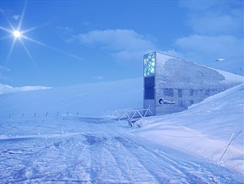
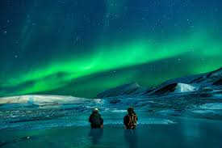
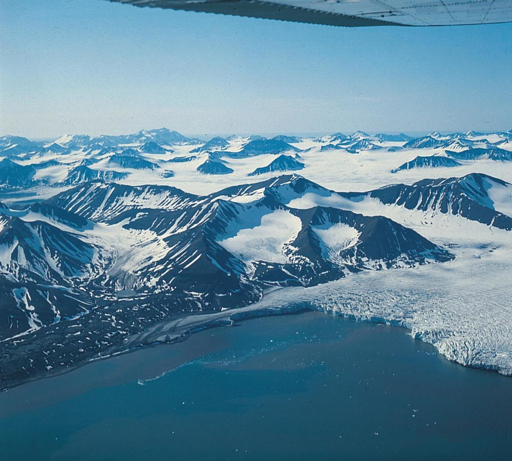
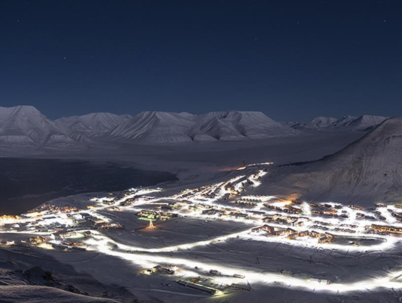

Pictures from Svalbard
Below is a beautiful picture of Longyearbyen, it is taken in the winter, just after the months of the polar night.

Below is a picture of the breathtaking aurora borealis also known as the northern lights. A common thing to lay your eye upon in Longyearbyen, but it is still equally as mesmerizing every time.



